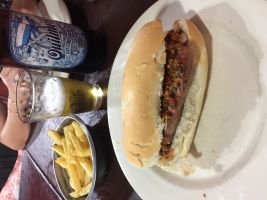

Nosso Brasil é lindo! Vamos citar Rio de Janeiro e Salvador por hora. O Rio de Janeiro, já apelidado como Cidade Maravilhosa, diz tudo: é realmente uma cidade incrível, com praias lindas. Visitar o Cristo Redentor e desfrutar daquela paisagem é uma experiência surreal. Fomos também a Botafogo e experimentamos a culinária local, que é incrível. Mas as pessoas não são tão calorosas quanto dizem, pelo menos não nessa área central. Achei as pessoas meio aceleradas e com pressa, e tive a impressão de que os turistas são vistos como fonte de renda. Gostaria de voltar para conhecer outros pontos mais culturais, talvez dentro de comunidades, e formar novas opiniões. Salvador é incrível! Do momento em que pisamos em seu solo, já sentimos a energia maravilhosa que essa cidade emana. Fomos ao Elevador Lacerda para subir ao Pelourinho, passamos pela famosa área do clipe do Michael Jackson e fomos desfrutar da comida no restaurante Senac de Gastronomia. Comemos o verdadeiro acarajé! Fomos a praias, vimos o Olodum. Não tem como você ir para Salvador e perder alguma coisa. A cidade já vem até você e te proporciona uma experiência única. Simplesmente incrível!

Argentina, o lugar que ficou marcado por seus taxis carissimos, brincadeiras a parte esse País nos conquistou sem duvida pela culinaria carnes, churrascos, empanadas, alfajores, doce de leite, sim é realmente incrivel e se voce for a Argentina, voce nao podera deixar de desfrutar desses itens citados. Buenos Aires mas confesso que não me apeguei muito a historia do local, mas se tivermos que voltar na Argentina, alem de ir visitar nosso amigo, vai ser pela culinaria. Fomos até a La Bombonera, entramos no museu porem dentro do Estadio não podia entrar, estava em reforma a area de visitas e nao foi possivel.


Nossa primeira vez vendo a neve foi no Chile, vimos somente um dia, mas ainda, sim, valeu. Chegamos a Santiago em uma quinta-feira a noite. Sexta-feira saímos para pagar os passeios, sacar dinheiro e comprar insumos no supermercado e sábado seria nosso primeiro passeio na neve. Porém, contudo, entretanto, todavia, estava chovendo muito em Santiago, logo, nas montanhas estava nevando muito e com isso as autoridades fecharam todas as vias e parques por risco de avalanche, vilas foram evacuadas, graças a Deus nada grave passou. Então fizemos passeios por conta pela cidade e valeu muito. Um dos parques abriu dois dias antes de voltarmos e nós fomos até um dos melhores dias da minha vida. Santiago tem uma mistura no antigo com o moderno muito clara, mas ainda, sim, é um dos destinos onde mais me senti em casa. O Chile é um grande produtor de vinho, porém não muito fã do vinho, mas provamos algumas cervejas artesanais muito interessantes, acesse nosso Instagram e Untappd para mais. No Chile comemos muito bem, mas não é nada barato. Comer todos os dias em restaurantes pode sair bem caro, mas recomendo pastel de choclo, completo e esta incrível porção de batatas com carne e ovo: